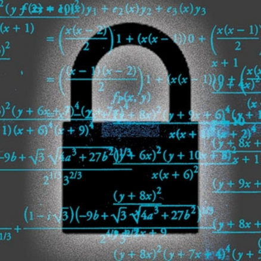

Kriptografija
Kriptografija je znanost koja se bavi logičkom promjenom podataka. Riječ dolazi od grčkog pridjeva kriptós (κρυπτός) - "skriven" i glagola gráfo (γράφω) - "pisati". Kriptografija je grana kriptologije.
Kriptografija se razvija zbog potrebe da se podatci pošalju primatelju, da nitko drugi osim primatelja i pošiljatelja ne zna izvorne podatke.
Osnovni pojmovi u kriptografiji su: osnovni algoritam (Alice -Bob -Eve), šifriranje (kodiranje), dešifriranje (dekodiranje), te ključ.
Osnovni Alice -Bob -Eve algoritam glasi: Alice (pošiljatelj) šifrira (kodira) podatke te ih pošalje Bob-u (primatelj), Eve 'gleda' kodirane podatke i pokušava ih 'razbiti' (dešifrirati bez ključa), Bob prima podatke, dešifrira je te čita podatke. Da ovaj algoritam radi potrebno je da i Alice i Bob imaju isti ključ.
Šifriranje (kodiranje) - postupak kojime se podatci pomoću ključa promjene te se više ne mogu čitati(osim ako imate ključ)
Dešifriranje (dekodiranje) - postupak kojime se šifrirani podatci pomoću ključa promjene u izvorne podatke.
Ključ - način šifriranja i dešifriranja podataka.
Moderna kriptografija
U modernoj kriptografiji još se uvijek koristi šifriranje simetričnim ključem. Primjer za to je IBM-ova DES šifra koju i danas koristi Unix, kao i njen prethodnik šifra Lucifer. Najčešći problem ove metode je i danas način prijenosa ključa. Postoje i varijante metode kod kojih su ključevi različiti ali se mogu jednostavno jedan iz drugoga izračinati. Dolazimo do paradoksa da bi najsigurnije bilo poslati ključ šifrirano i počinje vrtnja u krug. DES je javno dostupna i korištena metoda šifriranja od 1976. godine, iako se danas smatra nesigurnom, često je možemo naći u upotrebi (ATM, šifriranje e-mailova, kod pristupanja sustava s udaljenosti itd.) Oba spadaju u "blok" metode i jedan od razloga popularnosti je činjenica da su oba proglašena službenim metodama šifriranja od strane vlade S.A.D. Postoje brojne varijacije tih metoda pa tako i trostruki DES koji je bitno sigurniji.